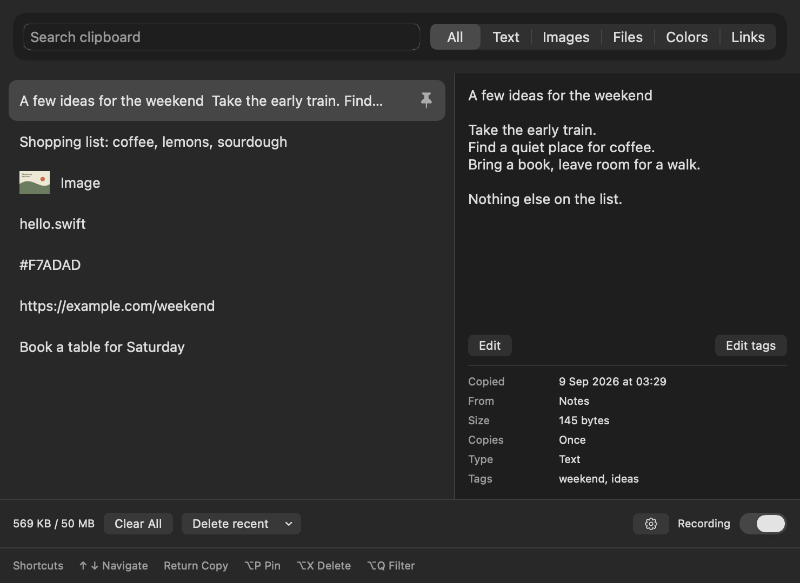
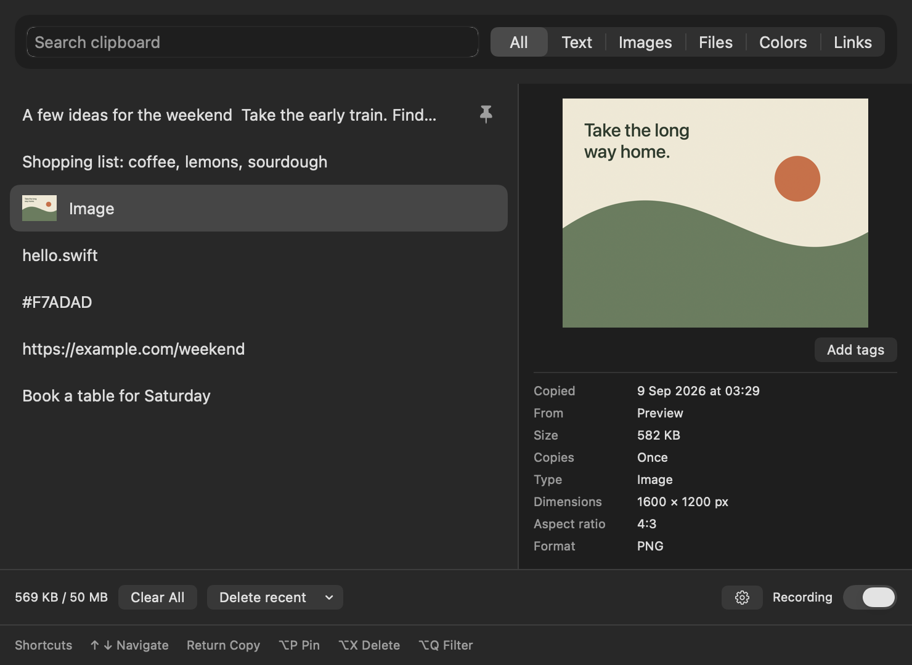
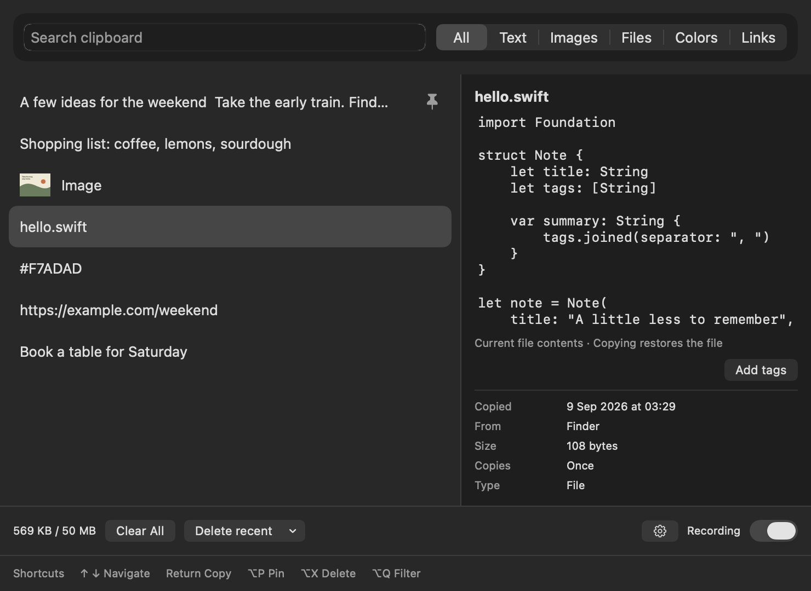
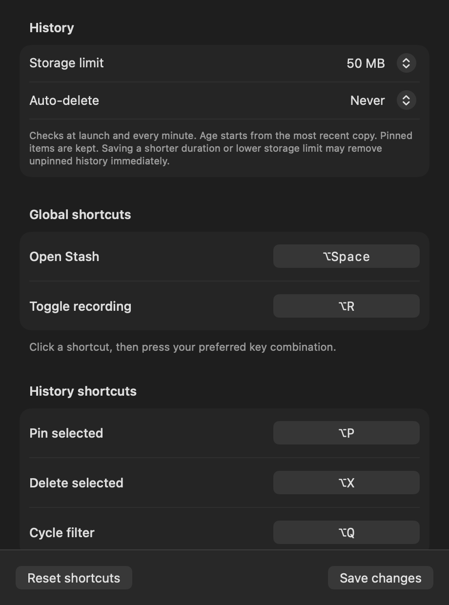

Your clipboard,
kept locally.
Text, images, links, colours, and files.
Find what you copied. Pick up where you left off.
Apple Silicon · macOS 15+
Unsigned build · Installation steps

Find it. Copy it. Carry on.
Open with ⌥ Space, search, and press Return to copy.
Pin the keepers. Add tags. Edit saved text.

See what you’re about to paste.
Browse image thumbnails and preview the selected image.
Its dimensions and format sit just below.

A look inside your copied files.
Preview supported text and code files, with indentation intact.
Restore the file itself when you’re ready to paste.

Keep just enough.
Set your storage limit, choose when history expires,
and make the shortcuts your own. Pinned items stay.
Native app views with sample content. Select an image to see it full size.
No account. No cloud sync. No Accessibility permission.
Install Stash
Download and open Stash.dmg, then run this in Terminal:
cp -R "/Volumes/Stash/Stash.app" "/Applications/" && xattr -dr com.apple.quarantine "/Applications/Stash.app" && open "/Applications/Stash.app"This unsigned build requires removing its download quarantine. If your managed Mac blocks installation, ask your administrator to allow it.
Open history with ⌥ Space, or choose Show Stash from the menu-bar icon. After restoring an item, paste with ⌘ V.
Stash can record sensitive clipboard content. Pause recording whenever you need to.
Build from source, launch at login, and full guide ↗Uninstall Stash
Quit Stash, remove its login entry, and delete the app:
pkill -x Stash 2>/dev/null || true
launchctl bootout "gui/$(id -u)" "$HOME/Library/LaunchAgents/com.vinylstack.stash.login-item.plist" 2>/dev/null || true
rm -f "$HOME/Library/LaunchAgents/com.vinylstack.stash.login-item.plist"
rm -rf "/Applications/Stash.app" "$HOME/Applications/Stash.app"Your history stays available if you reinstall. To permanently erase history and settings too:
rm -rf "$HOME/Library/Application Support/Stash"
defaults delete com.vinylstack.stash 2>/dev/null || true